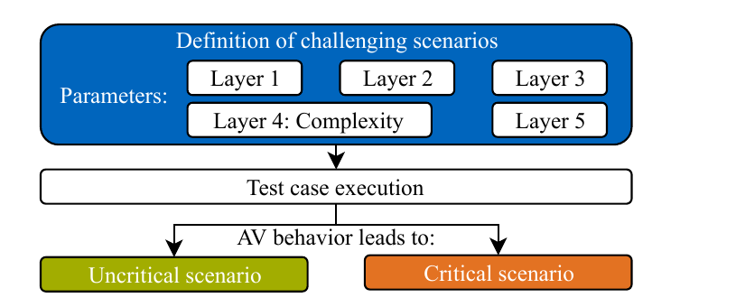
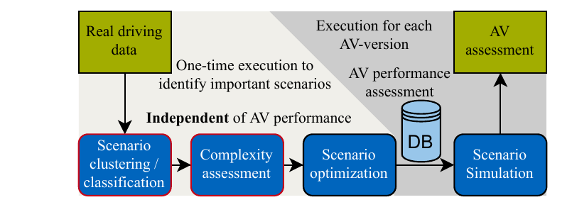
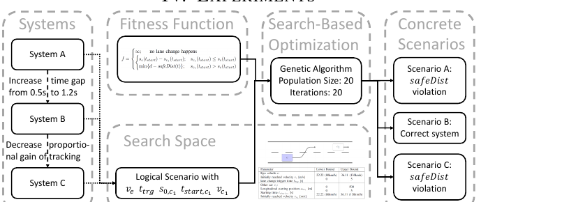
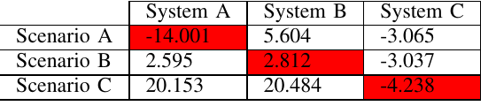
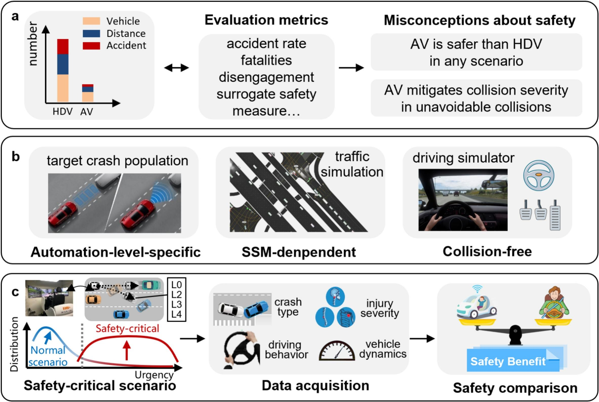
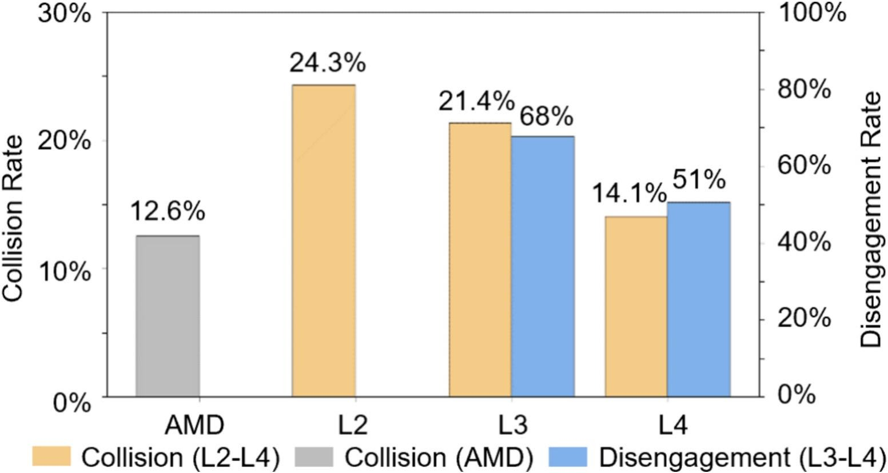
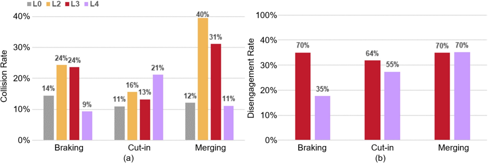
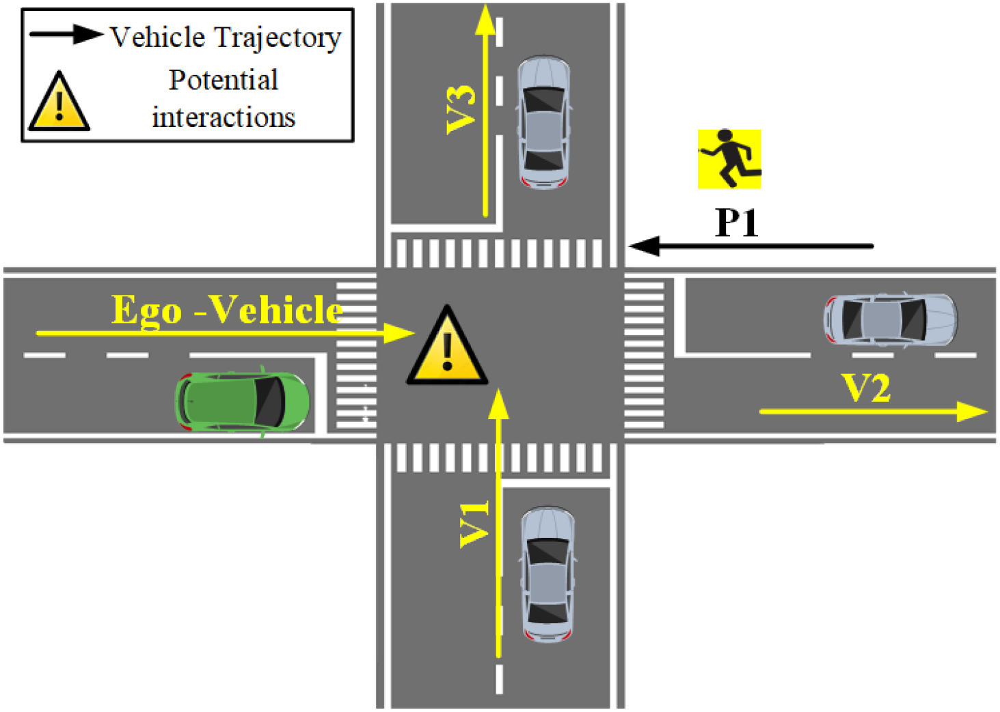
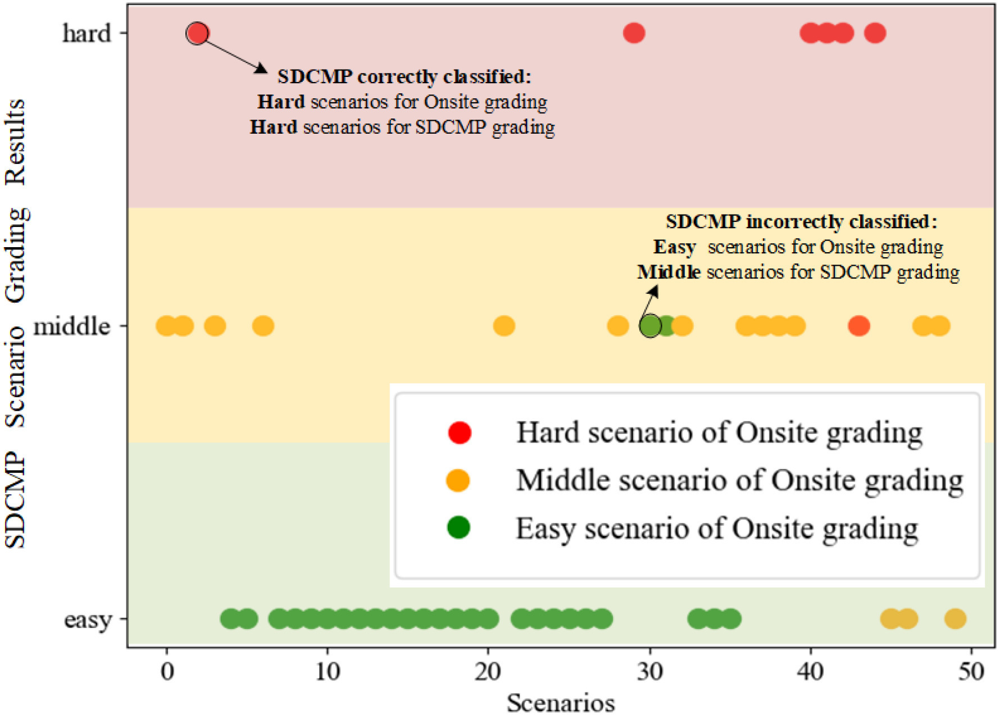
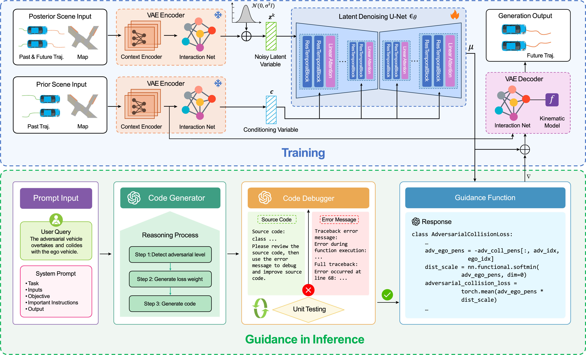

충돌·위험도 지표가 어떤 AV로 측정했느냐에 따라 흔들린다는 것을, 이 논문들이 구체적으로 어떻게 보였는지 검토한다. 단순히 "흔들린다"는 인용을 넘어, 각 논문의 실험 설정에서 우리가 SUT-불변성을 입증할 표(여러 AV × 여러 시나리오 × 위험도 단계)를 어떻게 짤지 단서를 끌어낸다.
Identification of Challenging Highway-Scenarios for the Safety Validation of Automated Vehicles Based on Real Driving Data
T. Ponn, M. Breitfuß, X. Yu, F. Diermeyer. 2020 Fifteenth Int. Conf. on Ecological Vehicles and Renewable Energies (EVER). Institute of Automotive Technology, Technical University of Munich.
한눈에Ponn은 우리와 문제의식을 가장 가까이 공유하는 선행 연구다. 충돌·TTC 같은 criticality 지표가 시험 차량의 거동에 의존하므로 "좋은" 시험 시나리오를 미리 고르는 데 부적합하다고 비판하고, 그 대신 시험 차량 성능과 무관하게 시나리오 자체의 난이도를 매기는 complexity 지표를 제안한다. 실주행 데이터(highD)에서 시나리오를 군집·분류한 뒤, 전문가가 직접 정한 13개 속성에 설문으로 얻은 가중치를 곱해 더하는 방식으로 complexity를 계산한다. 그러나 본문에서 이 지표가 ego 거동과 완전히 독립적이지는 않다고 인정하고, 무과실 추돌은 평가에서 제외하며, 시나리오가 상호작용이라 완전한 독립은 불가능하다고 밝힌다. 바로 이 세 가지 한계가 우리가 측정 모델로 정면 해결할 지점이다.
Fig 3 · 도전(challenging)과 임계(critical)의 구분

시나리오 자체는 파라미터로 정의되지만, 같은 시나리오라도 실행 뒤 AV 거동에 따라 uncritical이 되기도 critical이 되기도 한다. criticality가 SUT에 의존함을 보여준다. (그림 클릭 시 확대)
Fig 4 · 접근 흐름도

왼쪽은 AV와 독립적으로 한 번 수행해 중요한 시나리오를 식별하는 과정(군집·분류·complexity), 오른쪽은 AV 버전마다 실행해 성능을 평가하는 과정. 이 분리가 우리 데이터 격자와 같은 모양이다.
접근
RDD(highD) 군집·분류 + 손수 만든 complexity 지표
난이도 정의
13속성 가중합, 전문가 설문 가중치, 장면 최댓값
SUT 독립 주장
"valid for all AVs" (단, 부분적이라고 본문에서 인정)
범위
고속도로 · 5층 모델 Layer 4(객체)만
연구 배경
자율주행차의 안전 입증은 가능한 시나리오가 무한해 미해결 문제로 남아 있고, 시나리오 기반 접근은 의미 있는 시나리오만 골라 시험 부담을 줄이려 한다. 문제는 "어떤 시나리오가 좋은 시험 사례인가"를 사전에 어떻게 고르느냐다. 흔히 쓰는 방법은 TTC 같은 criticality 지표로 위험한 장면을 고르는 것인데, Ponn은 여기에 근본적 결함이 있다고 본다. criticality는 시험 차량이 그 장면에서 어떻게 행동했는지를 평가한 값이라, 사람이 운전해 기록한 실주행 데이터에서 위험했던 장면이 AV에게도 똑같이 위험하다는 보장이 없다. 그래서 사전 선별 기준으로는 부적합하다는 것이다.
무엇을 했나
핵심 기여는 시험 차량의 거동을 보지 않고 시나리오 자체의 난이도를 매기는 complexity 지표다. Ponn은 먼저 criticality와 challenging/complex를 용어로 갈라낸다. criticality는 시험을 실행한 뒤에야 알 수 있고 AV마다 결과가 다른 반면, challenging/complex는 실행 전에 정할 수 있고 AV 성능과 무관한 시나리오 고유의 어려움이라는 것이다. 이 구분을 그대로 옮기면 "the behavior of different AV-functions lead to different criticality-results for the same concrete scenario"(§II-B3 정의)로, SUT 의존성을 정의 수준에서 못 박은 셈이다. 이 관계는 Fig. 3에 그대로 그려져 있다. 그런 다음 실주행 데이터에서 시나리오를 뽑아 9개 기능 시나리오로 분류하고, 각 시나리오에 complexity 점수를 매겨 어려운 것만 남긴다.
방법론 상세
시나리오 추출: highD(드론 촬영 고속도로 420m 구간)에서 계층적 군집으로 ego와 주변 차량(ROI: 주변 11대, 안전거리 1.8s time gap)을 묶어 개별 시나리오로 만든다. 주변 차량이 없는 자유 주행은 버린다.
분류: 규칙 기반 결정트리로 13개 기동을 분류하고, ego가 반응해야 하는 차량(challenger)을 찾아낸다. challenger가 없으면 버린다. challenger 궤적을 기준으로 PEGASUS의 9개 기능 시나리오 중 하나로 배정한다.
complexity 지표: Cscenario = max(wT·ai). 13개 속성(주변 차량 수·종류·동역학·예측가능성·time gap·가림 영역·제동까지 시간 등)을 0~1로 정규화하고, 가중치 w를 곱해 장면별로 더한 뒤 시나리오 전체에서 최댓값을 취한다. 속성 간 결합효과는 무시하고 선형 기여를 가정한다.
가중치 결정: AV 안전성 분야 전문가 25명 설문으로 각 속성의 중요도를 받고, 그중 20명이 20개 highD 시나리오를 직접 난이도 평가한 결과와 절충해 w를 정한다. 즉 가중치가 데이터가 아니라 전문가 의견에서 나온다.
핵심 가정: 더 복잡한 시나리오가 더 자주 위험 상황으로 이어진다.
결과
highD의 차량 110,507대에서 challenger 고려로 67,455개 구체 시나리오가 남고(약 39%가 무의미로 걸러짐), 9개 기능 시나리오로 분류된다. complexity는 대부분 낮음·중간에 몰려 있어, 높음만 남기면 67,455개 중 단 8개로 줄어든다. 지표가 제대로 작동하는지는 복잡도 하·중·상 그룹(각 약 650개)을 단순 AV로 시뮬레이션해 확인했는데, 복잡도가 높을수록 임계 TTC(1.5초) 미만이 잦고 AV 책임 사고도 많았다(상위 그룹 22건 대 하위 2건). 가장 인상적인 대목은 criticality 기반 선별과의 직접 비교다. 선행 연구가 위험 사례로 든 highD 차량 1034가 Ponn의 지표로는 "evaluated with only a moderate complexity of 0.37 … low speed of approximately 20 km/h"(§IV-B)에 불과했다. 회피 공간이 충분한 저속 상황이라 시나리오 자체는 어렵지 않은데, 사람 운전자의 대응이 나빠서 위험해 보였을 뿐이라는 것이다. 그래서 이런 사례를 시험 DB에 넣는 것은 여러 AV를 평가할 신뢰 DB에는 무익하다고 결론짓는다.
한계 (우리에게 핵심)
Ponn은 SUT-독립 난이도를 원했지만 세 군데에서 그 목표가 흔들린다. 첫째, complexity가 완전히 독립적이지 않다고 본문에서 스스로 인정한다. "Because the complexity metric is not completely independent of the behavior of the ego-vehicle, the scenarios are started at the time with the highest complexity"(§IV-B). 둘째, 주변 차량이 ego에 적응하지 않게 고정해 두는 바람에 ego 무과실 추돌이 생기는데, 이런 사고는 "not considered in the evaluation"(§IV-B)이라며 평가에서 제외한다. 셋째, 왜 완전 독립이 불가능한지를 토론에서 분명히 밝힌다. "This is not 100 % possible because a scenario is a dynamic sequence of scenes where the ego-vehicle behavior influences the behavior of the surrounding TP and vice versa"(§V Discussion). 그밖에 난이도가 전문가가 직접 정한 13속성의 가중합이고 그 가중치도 설문에서 나온 값이라 검증된 측정 모델이 아니고, 고속도로와 Layer 4에 한정되며, 검증에 쓴 AV도 단순한 Matlab 함수다.
본 연구와의 관계
Ponn은 "criticality는 SUT 의존적이라 사전 선별에 못 쓴다, 시나리오 자체의 난이도가 필요하다"는 우리 출발점을 거의 그대로 공유한다. 차이는 해결 방식이다. Ponn이 인정한 세 한계는 우리 세 구조와 정확히 짝을 이룬다. 완전 독립이 안 되는 이유로 든 상호작용("influences … and vice versa")이 바로 우리가 모델 구조로 다루는 반응성이고, 그가 평가에서 제외한 무과실 추돌이 우리가 하한 u(피할 수 없는 충돌의 비율)로 모델에 통합하는 회피가능성이며, 그가 "최고 복잡도 시점에서 시작"하며 우회한 난이도 조절이 우리 severity 조건화다. 또한 Ponn은 난이도만 다루고 AV 강건성을 같은 척도에 올리지 않는다. 우리는 측정이론으로 난이도와 강건성을 하나의 SUT-불변 척도에서 함께 추정한다.
실험 설계 단서도 분명하다. Ponn의 흐름도(Fig. 4)는 "중요 시나리오를 한 번 식별"하는 과정과 "AV 버전마다 실행해 성능을 평가"하는 과정을 나눈다. 이 구분이 우리 데이터 격자와 같은 모양이다. 우리는 후자를 여러 AV로 채워 같은 시나리오의 충돌 결과가 AV에 따라 갈리는지를 보면 된다. 그리고 Ponn의 13개 complexity 속성은 우리 설명적 IRT에서 난이도 b를 시나리오 특징의 함수로 두는 공변량 후보로 그대로 쓸 수 있고, 복잡도 하·중·상 그룹을 비교해 지표를 검증한 방식은 우리 난이도 추정의 타당성 점검 절차로 참고할 수 있다.
IEEE IV 20202020TU Munich · ITK고속도로 차선변경 · 시뮬레이션
Re-Using Concrete Test Scenarios Generally Is a Bad Idea
F. Hauer, A. Pretschner, B. Holzmüller. 2020 IEEE Intelligent Vehicles Symposium (IV). Technical University of Munich · ITK Engineering.
한눈에Hauer는 "한 시스템용으로 만들거나 녹화한 구체 시나리오를 다른 시스템에 그대로 재사용하면 안 된다"를 수치 반례로 보인다. 같은 차선변경 시나리오 공간에서 시스템을 조금씩 바꾼 세 버전(A·B·C)에 대해 각각 결함을 가장 잘 드러내는 시나리오를 탐색으로 찾고, 그 시나리오들을 세 시스템에 교차 적용했다. 각 시나리오는 자기를 위해 만들어진 시스템에서만 결함을 가장 잘 드러냈고, 다른 시스템에 재사용하면 결함을 놓쳤다. 시험의 품질이 시스템에 따라 달라진다는 직접 증거다.
Fig 6 · 실험 개요

한 설계의 세 변형(A·B·C)에 대해, 같은 시나리오 공간을 탐색해 각 시스템의 결함을 가장 잘 드러내는 시나리오를 따로 찾는다. (그림 클릭 시 확대)
Table I · 적합도 행렬 (시나리오 × 시스템)

빨간 대각선은 "각 시나리오가 자기 시스템에서만 결함을 가장 잘 드러낸다"는 뜻. System A의 결함(-14.001)은 다른 시스템용 시나리오를 재사용하면 사라진다. (클릭 시 확대)
접근
차선변경 + 탐색 기반 시험 생성, 시스템 간 교차 재사용
시스템
한 설계의 세 변형(time gap 0.5→1.2s, PID 이득 ↓)
핵심 결과
시나리오는 자기 시스템에서만 최적(Table I 대각선)
범위
CarMaker 시뮬레이션 · 단일 차선변경 · 반례 1건
연구 배경
시나리오 기반 closed-loop 시험이 표준이고, 산업과 문헌 모두 시험 케이스를 재사용한다. 실주행에서 녹화한 시나리오, 미리 만들어 둔 "test catalog", 회귀 시험이 모두 "한 번 만들어 두고 나중에 다시 쓴다"에 기댄다. Hauer는 동적 주행 시나리오에서는 이 가정이 위험하다고 본다. 시스템이 조금만 바뀌어도 이전에 유용했던 시험이 무용해지거나, 더 나쁘게는 결함을 숨길 수 있기 때문이다. 서론의 예가 분명하다. 차선변경 안전거리 시험을 통과하도록 시스템을 고쳐 같은 시나리오를 재실행하면, 시스템이 그 틈을 너무 좁다고 판단해 아예 차선변경을 안 해 버려서, 정작 안전거리 위반은 검사되지 못한다.
무엇을 했나
구체 시나리오 재사용 가능성에 대한 수치 반례를 제시한다. 여기서 "좋은" 시험 케이스란, 정상 시스템은 안전 영역의 한계에 근접하게 하고 결함 있는 시스템은 그 한계를 넘게 만드는 시나리오다. 한 시스템용으로 생성한 "좋은" 시나리오를 다른 시스템 변형들에 교차 적용해, 재사용하면 시험 품질이 떨어지는지를 측정한다(Fig. 6). 결론에서 핵심 주장을 분명히 한다. "the quality of a test case is system-dependent and may become bad when the system changes."(§VI Conclusion)
방법론 상세
논리 시나리오: 차선변경 하나, 매개변수 5개(ego 도달속도 ve, 차선변경 트리거 시간 ttrg, 상대차 시작위치 s0,c1·시작시간 tstart,c1·속도 vc1).
적합도 함수: 차선변경이 일어나되 안전거리 위반 직전 여유가 가장 작은(결함이면 위반이 가장 큰) 시나리오를 찾도록 [12]의 정의를 사용한다. 안전거리는 Vienna Road Convention 형식화[26]로 계산한다.
세 시스템: A는 MPC 차선변경[23](time gap 0.5s). B는 A에서 time gap을 1.2s로 늘린 것, C는 B에서 추적 PID 비례이득을 낮춘 것이다. 같은 설계의 작은 설정 변경으로, 회귀 시험을 모사한다.
재사용 모사: 각 시스템의 최적 시나리오를 세 시스템 모두에 적용해 적합도 행렬(Table I)을 만든다.
결과
Table I은 3×3 적합도 행렬이다(음수일수록 안전거리 위반을 크게 드러냄). 대각선(빨강)에서 보듯 모든 시나리오는 자기를 위해 만들어진 시스템에서 가장 잘 드러내는 값을 갖는다"Every concrete test scenario has the best fitness value for testing the system it was created for."(§IV-B). 특히 System A는 자기 시나리오 A에서 −14.001로 14m 위반을 드러내지만, 다른 시스템용 시나리오 B(+5.604)나 C(−3.065)를 재사용하면 "the faulty behavior of system A is not revealed"(§IV-B). 다른 버전용으로 만들거나 녹화한 시나리오를 그대로 쓰면 결함을 놓친다는 뜻이다(Table I).
한계
단일 차선변경 시나리오, 한 설계의 세 설정 변형, 시뮬레이션 기반 반례 한 건이다. 서로 다른 벤더의 다른 설계라면 차이가 더 클 것이라 보지만 그 부분은 직접 보이지 않는다. 또 재사용이 절대 불가라는 주장도 아니어서, 거동이 바뀌지 않았다고 보장할 수 있으면 재사용해도 된다고 본다(§IV-B). 무엇보다 이 논문은 시험 케이스가 결함을 드러내는가(fitness)를 다루지, 시나리오 난이도를 하나의 척도로 측정하는 문제를 풀지는 않는다. 처방도 거기서 멈춘다. "we recommend the re-use of logical scenarios instead of concrete test scenarios"(§VI).
본 연구와의 관계
Hauer는 소프트웨어 시험 관점에서 SUT 의존성을 가장 깔끔하게 보여준다. Table I은 사실상 "시나리오 × 시스템" 결과 행렬이고 행·열을 따라 순위가 뒤집히는데, 이는 우리가 IRT로 다루려는 응답표(시나리오 × AV의 충돌 0/1)와 같은 구조다. 충돌률 대신 적합도를 쓸 뿐, "어떤 시스템으로 쟀느냐에 따라 시나리오의 값이 달라진다"는 현상은 동일하다.
처방의 방향도 우리와 닿아 있다. Hauer는 구체 시나리오 대신 논리 시나리오를 재사용하고 시스템마다 구체 시나리오를 다시 생성하라고 권하는데, 이는 우리가 난이도를 한 번의 구체 주행이 아니라 그것을 만드는 생성 기법(논리 수준)의 성질로 정의하는 것과 같은 직관이다. 차이는 분명하다. Hauer는 "시스템마다 다시 생성"에서 멈춰 시스템 간 비교를 포기하지만, 우리는 모든 시스템을 하나의 불변 척도에 올려 비교까지 한다. Table I 같은 행렬을 그대로 측정 모델에 넣어 시나리오 난이도와 시스템 강건성을 분리해 추정하는 것이 우리 출발점이다.
A unified experimental framework for estimating collision rates and occupant injury severity across different levels of driving automation
J. Shen, D. Qin, Z. He, H. Wang, X. Ji, Y. Zhang, Q. Zhou, B. Nie. Accident Analysis & Prevention 223 (2025) 108273. doi:10.1016/j.aap.2025.108273.
한눈에Shen은 자동화 수준(L2·L3·L4)과 인간 운전(AMD)을 같은 도로 시나리오, 같은 긴급도, 같은 지표로 공정하게 비교하는 통합 실험 틀을 만든다. 긴급도(THW·TTC)를 수준 간 맞춘 통제 조건에서도 충돌률은 AMD 12.6%, L2 24.3%, L3 21.4%, L4 14.1%로 갈렸다. 더 결정적으로 시나리오 유형을 바꾸면 어느 AV가 가장 안전한지가 뒤집힌다. L4는 Braking·Merging에선 가장 낮은 충돌률이지만 Cut-in에선 가장 높다(21%). 같은 조건에서도 충돌률이 측정에 쓴 AV에, 그리고 시나리오 유형에 좌우된다는 통제된 증거다.
Fig 1 · 통합 비교 틀과 흔한 오해

공정 비교를 위해 시나리오·긴급도·지표를 통제하는 통합 틀. 왼쪽 위에 "AV가 어떤 시나리오에서도 더 안전하다"는 오해를 명시해 둔 점이 뒤의 순위 역전과 이어진다. (클릭 시 확대)
Fig 5 · 자동화 수준별 충돌률

긴급도를 맞춘 같은 조건에서도 충돌률이 AMD 12.6%에서 L2 24.3%까지 두 배 가까이 갈린다. (클릭 시 확대)
Fig 6 · 시나리오 유형별 충돌률(순위 역전)

유형을 바꾸면 순위가 뒤집힌다. L4는 Braking(9%)·Merging(11%)에선 가장 안전하지만 Cut-in(21%)에선 가장 위험하다. "가장 안전한 AV"가 시나리오에 따라 달라진다. (클릭 시 확대)
접근
수준 간 공정 비교용 통합 실험 틀(긴급도·지표 통제)
비교 대상
AMD(인간)·L2·L3·L4 · Braking/Cut-in/Merging
핵심 결과
통제 조건에서도 충돌률 12.6→24.3%, 유형별 순위 역전
범위
시뮬레이션 · 고속도로 · 부상 심각도는 추정치
연구 배경
실세계 사고 데이터가 부족하고 불균형해, 제조사와 자동화 수준 사이의 안전 성능을 안전 위험 시나리오에서 엄밀히 검증하기 어렵다. 게다가 비교가 공정하지 않으면(서로 다른 시나리오, 다른 긴급도, 다른 지표로 재면) 결론을 믿을 수 없다. Shen은 안전성에 대한 흔한 오해 두 가지를 짚는다(Fig. 1). "AV는 어떤 시나리오에서도 인간보다 안전하다"와 "AV는 불가피한 충돌의 피해를 줄인다"이다. 공정하게 비교하려면 시나리오·긴급도·지표를 통제해야 한다는 문제의식이 출발점이다.
무엇을 했나
AMD(고급 수동 운전, 인간 기준선)와 L2·L3·L4를 같은 고속도로 안전 위험 시나리오에서, 긴급도를 수준 간 맞추고 같은 지표로 평가하는 통합 실험 틀을 제안한다. 위험 유발 알고리즘으로 안전 위험 사건을 만들고, 충돌 여부와 충돌 시 탑승자 부상 심각도를 같은 틀에서 추정해 "통합 안전 이득(unified safety benefit)"으로 환산한다. 이로써 "충돌은 적지만 다치면 더 심한" 경우까지 한 잣대로 비교한다.
방법론 상세
시나리오 3종: Braking(앞차 급감속), Cut-in(끼어들기), Merging(합류). 모두 고속도로.
긴급도 통제: Braking은 종방향 time headway(THW), Cut-in·Merging은 횡방향 time-to-collision(TTC)을 수준 간 같은 범위로 맞춰 "같은 위험도"에서 비교한다.
긴급도를 맞춘 통제 조건에서 충돌률은 AMD 12.6%, L2 24.3%, L3 21.4%, L4 14.1%였다(Fig. 5) "the L2 AVs exhibited the highest collision rate in safety–critical scenarios at 24.3 %, while the L4 AVs had a collision rate of 14.1 %"(§Results). 부상 심각도는 L2 11.1%, L3 21.6%, L4 9.2%로, L3는 충돌은 줄지만 중상이 늘어 L2와 통합 안전 이득이 비슷하다. 가장 중요한 것은 시나리오 유형을 바꾸면 순위가 뒤집힌다는 점이다. L4는 Braking 9%·Merging 11%로 가장 안전하지만 Cut-in에선 21%로 가장 위험하다(Fig. 6).
한계
시뮬레이션 기반이고 고속도로 세 유형에 한정되며, 특정 AV 모델과 위험 유발 알고리즘에 의존한다. 부상 심각도는 실측이 아니라 충돌 조건에서 추정한 값이다. 무엇보다 이 틀은 수준 간 공정 비교를 사람이 직접 설계한 것이지, 난이도와 강건성을 잠재변수로 추정하는 측정 모델은 아니다.
본 연구와의 관계
Shen은 SUT 의존성을 가장 통제된 형태로 보여준다. 긴급도를 맞춘 같은 조건에서도 충돌률이 AV에 따라 두 배 가까이 갈리고, 시나리오 유형을 바꾸면 "가장 안전한 AV"가 뒤바뀐다. 뒤집힘은 측정이론으로 말하면 specific objectivity(표본 불변성)의 위반이다. 문항(시나리오)이 응시자(AV)의 순위를 바꿔서는 안 되는데 바뀐다.
동시에 Shen의 실험 설계는 우리 데이터 격자의 직접 template다. AMD·L2·L3·L4(여러 AV) × Braking·Cut-in·Merging(여러 시나리오) × 긴급도 통제(severity)가 곧 우리의 AV × 시나리오 × severity 격자다. 차이는, Shen은 긴급도와 지표를 사람이 맞춰 공정 비교를 시도하지만, 우리는 그 격자를 측정 모델에 넣어 시나리오 난이도와 AV 강건성을 하나의 SUT-불변 척도에서 분리 추정한다. Shen이 보고한 "통합 안전 이득"은 우리 강건성 θ의 도메인 버전에 가깝다.
Transportation Research Part C 20262026OnSite 대회 시나리오고정 EV(Lattice)
How to grade autonomous driving testing scenarios with uncertain V2V interactions? A primitive complexity-based method
Q. Qiu, Z. Xu, Y. Gao, Y. Jiang, Z. Xu, C. Liu, et al. Transportation Research Part C: Emerging Technologies (2026) 105737. doi:10.1016/j.trc.2026.105737.
한눈에Qiu는 시나리오 복잡도를 등급화하는 방법 SDCMP(Scenario Difficulty Classification Model based on Primitive)를 제안한다. 핵심 선택은 EV(ego)를 단일 고정 알고리즘(독점 Lattice 플래너)으로 묶어 두는 것이다. 그러면 시나리오 간 복잡도 차이가 알고리즘이 아니라 시나리오 자체의 상호작용 구조에서만 나온다고 본다. 50여 개 대회 시나리오에서 SDCMP의 복잡도 등급이 참가 알고리즘들의 실제 성능과 91.3% 일치했다. EV를 하나로 고정하면 SUT 의존성을 피할 수 있다는 접근인데, 바로 그 고정이 한계다.
Fig 1 · 교차로에서 EV와 배경차의 상호작용

시나리오 복잡도는 EV와 배경차(V1·V2·V3·P1)의 상호작용 구조에서 나온다. SDCMP는 이 상호작용을 정량화한다. (클릭 시 확대)
Fig 24 · SDCMP 등급 vs 대회 실제 난이도 (91.3% 일치)

SDCMP가 매긴 복잡도 등급(세로)이 대회의 실제 난이도(점 색)와 대부분 같은 띠에 떨어진다. 일치율 91.3%. 단, 이 일치는 그 대회 참가 알고리즘들에 대한 것이다. (클릭 시 확대)
접근
시나리오 복잡도 등급화(SDCMP), EV를 고정 Lattice로
복잡도 정의
V2V 상호작용을 primitive로 분해해 정량화
핵심 결과
대회 알고리즘 성능과 91.3% 일치
범위
OnSite 대회 시나리오 · 단일 고정 EV
연구 배경
시나리오 난이도를 미리 매기려면 그 난이도가 특정 알고리즘의 성능이 아니라 시나리오 자체에서 나와야 공정하다. 그런데 차량 간(V2V) 상호작용은 불확실해서 난이도를 정의하기가 어렵다. Qiu는 이 난이도를 알고리즘과 떼어 내려 한다. 같은 시나리오라도 어떤 알고리즘이 주행하느냐에 따라 위험도가 달라지면 공정한 등급화가 불가능하기 때문이다. 이는 우리 문제의식과 정확히 같다.
무엇을 했나
시나리오의 EV-배경차 상호작용을 작은 단위(primitive)로 분해해 복잡도를 정량화하는 SDCMP를 제안한다(Fig. 1). 핵심 선택이 우리에게 중요하다. EV를 단일 고정 알고리즘으로 두어, 시나리오 간 복잡도 차이가 알고리즘이 아니라 시나리오 고유의 상호작용 구조와 동역학 제약에서만 나오게 했다"under a fixed autonomous driving algorithm of EV, differences in complexity across scenarios arise solely from their intrinsic interaction structures and dynamic constraints, independent of the algorithms themselves"(§Method).
방법론 상세
primitive 분해: 시나리오를 시간에 따른 교통 시계열로 보고, 은닉 상태 모형(전이·방출 모수를 추정하는 HMM류)으로 시계열을 의미 단위인 primitive로 분할한다.
복잡도 정량화: 각 primitive의 복잡도를 EV-배경차 상대 위치·속도·상호작용으로 계산하고, 이를 모아 시나리오 복잡도 등급(easy/middle/hard)을 매긴다.
고정 EV:EV는 독점 Lattice 기반 경로계획(Botros & Smith, 2023)으로 고정해, 모든 시나리오에서 동일한 EV 거동을 만든다.
검증: OnSite 자율주행 대회의 50여 개 시나리오로, SDCMP 등급을 참가자 알고리즘들의 실제 성능 순위와 비교한다.
민감도: 모수를 흔들어도 등급이 안정적인지(평균 상대변화 ±5~10%) 확인한다.
결과
SDCMP의 복잡도 등급이 대회 참가 알고리즘들의 실제 성능과 91.3% 일치했다"the consistency accuracy reaches 91.3%"(§Results). Fig. 24에서 보듯 SDCMP가 hard/middle/easy로 매긴 등급이 대회의 실제 난이도(점 색)와 대부분 같은 띠에 떨어진다. 즉 EV를 하나로 고정하면 시나리오 자체의 복잡도를 비교적 일관되게 매길 수 있다는 것이다.
한계
가장 큰 한계는 바로 그 "EV 고정"이다. 단일 Lattice 플래너에 묶인 난이도는 그 EV가 바뀌면 흔들린다. 91.3% 일치도 그 대회 참가 알고리즘들에 대한 값이라, 다른 AV 집단에서도 유지된다는 보장이 없다. 또 복잡도를 시나리오의 상호작용 구조에 맞춰, 회피가능성이나 충돌 심각도 같은 다른 축은 다루지 않는다.
본 연구와의 관계
Qiu는 우리와 문제의식을 공유한다. 난이도가 알고리즘이 아니라 시나리오에서 나와야 공정하다는 것이다. 그러나 해법이 다르다. Qiu는 EV를 하나로 고정해 SUT 의존성을 우회하지만, 우리는 여러 AV에 걸쳐 불변인 난이도를 추정한다. Qiu의 "고정 EV"는 Ponn이 "완전 독립은 불가능하다"고 인정한 지점을 공학적으로 비껴간 형태다. 한 AV에 묶인 척도는 그 AV가 바뀌면 무너지므로, 어떤 응시자로 재든 문항 난이도가 변하지 않는다는 specific objectivity가 없다.
그래서 Qiu는 우리 모델의 입력과 검증 양쪽에 쓸모가 있다. SDCMP의 primitive 복잡도 같은 시나리오 특징은 우리 설명적 IRT에서 난이도 b를 시나리오 특징의 함수로 두는 공변량 후보가 되고, 단 우리는 b를 단일 EV가 아니라 여러 AV의 충돌 결과에서 추정한다. 또 Qiu가 등급을 알고리즘 성능 순위와 맞춰 본 검증 방식은 우리 난이도 추정의 타당성을 점검하는 절차로 참고할 수 있다.
Transportation Research Part C 20262026LLM + Latent DiffusionSOTA 적대 생성
LD-Scene: LLM-guided diffusion for controllable generation of adversarial safety-critical driving scenarios
M. Peng, Y. Xie, X. Guo, R. Yao, H. Yang, et al. Transportation Research Part C: Emerging Technologies (2026) 105694. doi:10.1016/j.trc.2026.105694.
한눈에LD-Scene은 자연어 프롬프트로 적대적 안전 위험 시나리오를 만드는 최신 SOTA 생성기다. 대규모 언어모델(LLM)이 적대 충돌을 유도하는 guidance 함수 코드를 짜고, Latent Diffusion 모델이 그에 맞춰 현실적인 다중 차량 궤적을 생성한다. 우리에게 중요한 것은 일반화를 보이려고 수행한 transferability 실험이다. 같은 생성 시나리오를 ego planner만 바꿔 돌리자 충돌률이 40.75%(Lane-Graph)에서 62.88%(IL)로 1.5배 넘게 뛰었다. SOTA 생성기 자신의 표가 SUT 의존성을 가장 깔끔하게 보여준다.
Fig 1 · LD-Scene 구조 (LLM guidance + Latent Diffusion)

LLM이 "적대 충돌을 유도하는 손실 함수" 코드를 생성·디버깅하고, 그 guidance로 Latent Diffusion이 현실적 다중 차량 궤적을 만든다. 자연어로 적대 시나리오를 제어한다. (클릭 시 확대)
접근
LLM(코드 생성) + Latent Diffusion, 자연어 제어
우수성 지표
Adv-Ego 충돌률(1순위) · realism · efficiency
핵심 결과
ego planner 교체 시 충돌률 40.75→62.88%
범위
닫힌 루프 시뮬 · 무과실 충돌 귀책은 future work
연구 배경
적대 시나리오 생성이 빠르게 발전했지만, 기존 방법은 닫힌 루프에서 ego planner를 평가하거나 ego에 반응하는 적대 상황을 만들기 어려웠고, 시나리오를 자연어로 통제하기도 어려웠다. LD-Scene은 "공격 차량이 ego를 추월하다 충돌하게" 같은 자연어 지시로 적대 시나리오를 만들고, 그 결과를 충돌률(Adv-Ego collision rate)로 평가해 우수성을 보고한다.
무엇을 했나
LLM과 Latent Diffusion을 결합한다(Fig. 1). LLM이 사용자 프롬프트를 받아 적대 충돌 손실(AdversarialCollisionLoss) 함수 코드를 단계적으로 생성·디버깅하고, 그 guidance로 diffusion 모델이 현실적인 다중 차량 궤적을 만든다. 생성 품질은 적대성(Adv-Ego 충돌률), 현실성(offroad 충돌률), 효율(시간)으로 평가하며, LD-Scene이 Adv-Ego 충돌률에서 기존 생성기들을 능가한다.
방법론 상세
학습: VAE 인코더와 interaction net으로 장면을 잠재변수로 만들고, U-Net 잠재 확산으로 조건화 변수에 맞춰 미래 궤적을 생성한다.
추론 guidance: 프롬프트 → LLM 코드 생성기(적대 수준 판단 → 손실 가중치 → guidance 함수 코드) → 코드 디버거(에러 메시지로 자가 수정) → AdversarialCollisionLoss로 확산을 유도한다.
평가 지표: 적대성 Adv-Ego 충돌률을 1순위로, 현실성·효율을 함께 본다. LD-Scene의 Adv-Ego 충돌률 40.75%는 baseline 생성기들보다 높다.
Transferability:같은 생성 시나리오를 규칙기반·학습기반 여러 ego planner로 돌려 일반화를 본다(§4.7).
transferability 실험에서 같은 생성 시나리오를 ego planner만 바꾸자 Adv-Ego 충돌률이 크게 달라졌다.
Ego planner (동일 생성 시나리오)
Adv-Ego 충돌률 (%)
Lane-Graph
40.75
PDM-Closed
41.36
IL
62.88
IL-Multi
60.94
같은 생성 결과인데 ego를 IL 계열로 바꾸면 충돌률이 40.75%에서 62.88%로 1.5배 넘게 뛴다. 또 ego가 책임 없는 충돌도 관찰된다 "the ego planner is not at fault for the collision outcome: for example, the adversarial vehicle may aggressively accelerate and rear-end the ego vehicle"(§4.9). 이런 충돌의 귀책은 향후 과제로 남긴다.
한계
LD-Scene은 충돌률을 1순위 우수성 지표로 쓰면서도, 그 충돌률이 ego에 따라 1.5배 흔들린다는 것을 자기 표로 보여줄 뿐 측정 문제로 다루지는 않는다. 무과실 충돌의 귀책도 미해결로 남기고, 평가는 특정 데이터셋과 planner 집합에 한정된다.
본 연구와의 관계
LD-Scene은 우리 주장에 가장 깔끔한 증거다. 최신 SOTA 생성기조차 충돌률을 1순위 지표로 쓰는데, 바로 그 충돌률이 ego planner 교체만으로 40.75%에서 62.88%로 흔들린다. 위 Table 4는 "고정된 생성 시나리오 × ego planner"의 충돌률 행렬이라, Hauer의 Table I과 함께 우리 IRT 응답표(시나리오 × AV)의 실물 예다. 우리는 이런 행렬을 측정 모델에 넣어 시나리오 난이도를 특정 ego에 의존하지 않게 추정한다.
또 LD-Scene이 future work로 남긴 무과실 충돌 귀책은 우리 회피가능성(하한 u) 구조가 정면으로 다루는 부분이고, 자연어로 제어되는 반응형 적대 생성은 우리 reactivity·severity 구조가 실재함을 보이는 근거다(섹션 E와 연결). 정리하면 LD-Scene은 문제(SUT 의존성)와 우리가 더할 세 구조의 필요성을 한 논문에서 동시에 보여준다.
섹션 B 완료
Ponn · Hauer · Shen · Qiu · LD-Scene 검토을 마쳤다. 다섯 편이 한목소리로 SUT 의존성을 보이고, 각 논문의 실험 설정이 우리 "여러 AV × 여러 시나리오 × 위험도" 격자 설계의 단서가 된다. 다음은 섹션 A(측정 모델) 또는 다른 섹션으로 이어간다.